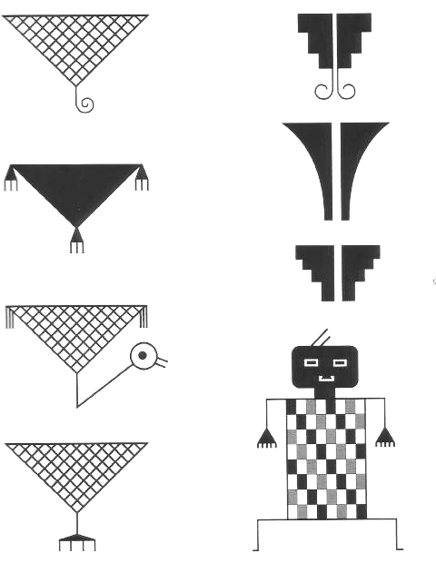

Patrones
La alfarería característica de la época incaica en la región es el tipo Aconcagua tricromo engobado. Éste comprende piezas cerámicas como escudillas o pucos decorados por el interior con evidente influencia Diaguita-Inca. Las piezas cerámicas han sido recuperadas principalmente en aquellos sitios en que el tipo Aconcagua Salmón posee una mínima representación, por ejemplo en San José de Piguchén, en El Palomar y Campiche. Todos ellos se localizan en la cuenca del río Aconcagua donde la presencia incaica se encuentra bien documentada a través del estudio de asentamientos exclusivos del Tawantinsuyo como en cementerios donde se encuentran tumbas con ofrendas incaicas y locales.
